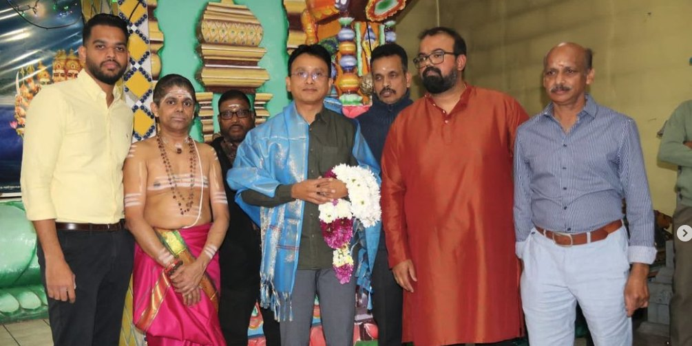
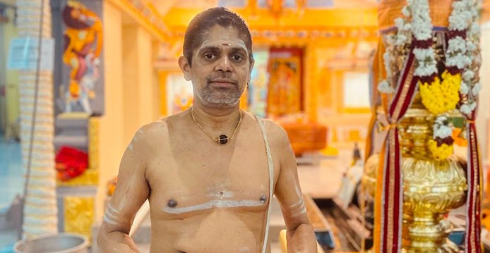

Foto: Rainer Halama / Wikimedia Commons, CC BY-SA 4.0
Community
Vereine, Tempel, Schulen und Menschen: Geschichten aus der tamilischen Gemeinschaft im deutschsprachigen Raum.

Foto: Ewe vonDetten / Wikimedia Commons, CC BY-SA 4.0

Foto: Roland zh / Wikimedia Commons, CC BY-SA 3.0

Foto: 18quirl08 / Wikimedia Commons, CC BY-SA 4.0

Foto: Björrn Sothmann / Wikimedia Commons, CC BY-SA 4.0
Community
Leuk: Tausende tamilische Katholiken feierten Lourdes-Fest und 20 Jahre Mission Aargau

Foto: Lutz Fischer / Wikimedia Commons, CC BY-SA 4.0
Community
30 Jahre Tamilschule Aarau: Von 37 auf 78 Kinder, doch die Schulräume werden unsicher
Aus dem Archiv
Community
Unnikrishnan der Ehrengast im Sri-Kurinchikumaran-Tempel Gummersbach
Bild: Archiv tamil.de

Community
Mango erzielt Rekordpreis bei Auktion im Sri Kurinchikumaran Tempel in Gummersbach
Bild: Archiv tamil.de
